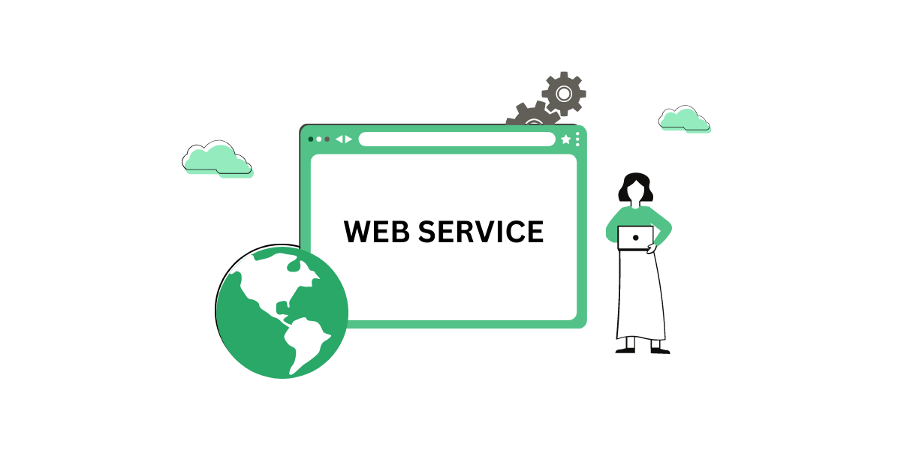
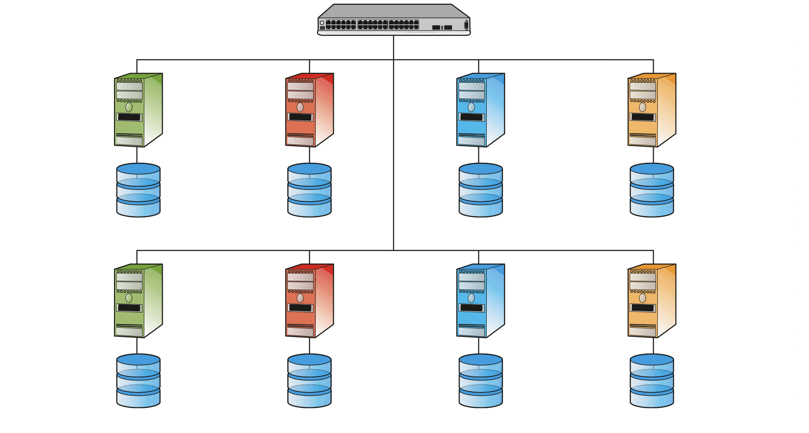
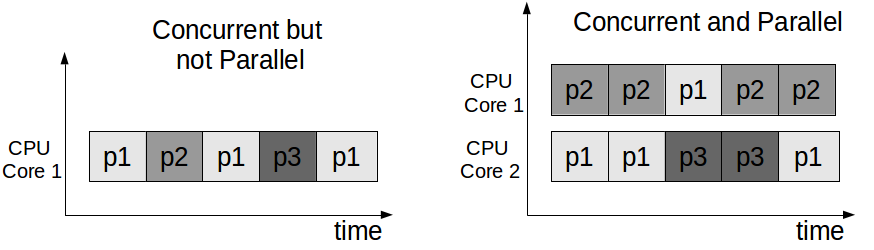

Area Scientifica e Tecnica
In questa sezione ho raccolto gli argomenti delle materie scientifiche e tecniche che ho trovato più interessanti. Non è un elenco completo del programma, ma una selezione personale dei temi che mi hanno colpito di più e che mi è piaciuto approfondire.
Informatica
Web Services
I web services sono uno degli argomenti che mi sono piaciuti di più, perché mi hanno fatto scoprire come avviene la comunicazione in rete tra le diverse applicazioni e i web server. Capire come questi sistemi riescono a scambiarsi dati e a dialogare tra loro mi ha permesso di guardare in modo diverso a tutto ciò che usiamo ogni giorno online, e di apprezzare quello che succede davvero dietro le quinte.

Sistemi e reti
Le applicazioni e i sistemi distribuiti
Di sistemi e reti mi sono piaciute soprattutto le applicazioni e i sistemi distribuiti, in particolare le architetture RACS e RAPS, perché mi hanno fatto capire come sono strutturate le server farm e come vengono gestiti e organizzati i servizi che oggi conosciamo e utilizziamo ogni giorno. Approfondire questi argomenti mi ha permesso di comprendere meglio cosa c'è dietro la scalabilità e l'affidabilità dei grandi servizi online.

Tecnologie e Progettazione di Sistemi Informatici (TPSIT)
La concorrenza tra uno o più processi
Di TPSIT mi è piaciuto soprattutto l'argomento della concorrenza, perché mi ha fatto capire come vengono gestiti i vari processi dal processore di un computer. Comprendere come più processi possano essere eseguiti e coordinati tra loro mi ha aiutato a capire meglio cosa succede realmente all'interno di un computer mentre svolge più operazioni nello stesso momento.
